Lupus with macrophage activation: the debrief for week 10, Not settling
Tuesday 09:20 · Medical admissions unit
Day 2, the right antibiotics, and she is getting worse.

- Tuesday, 09:20, on the medical admissions unit.
- Simone Clarke is 27 and works in the babies’ room of a nursery.
- She came in on Sunday with a high fever and was treated as sepsis, possibly from her urine.
- After about 36 hours of piperacillin–tazobactam she spiked to 40.3 °C at 02:40, and meropenem was started.
On the round: NEWS2 (the National Early Warning Score) 7.
- Temperature
- 39.4 °C
- Pulse
- 118
- Blood pressure
- 104/62
- Breathing
- 24 / min
Her platelets: 142 on Sunday, 98 on Monday, 61 this morning.
The question for this pageWhy did the right antibiotics not work, and what was already on the screen that said so?
08:30 · rigors again
Thirty-six hours of the right antibiotics and no focus is a finding, not bad luck.
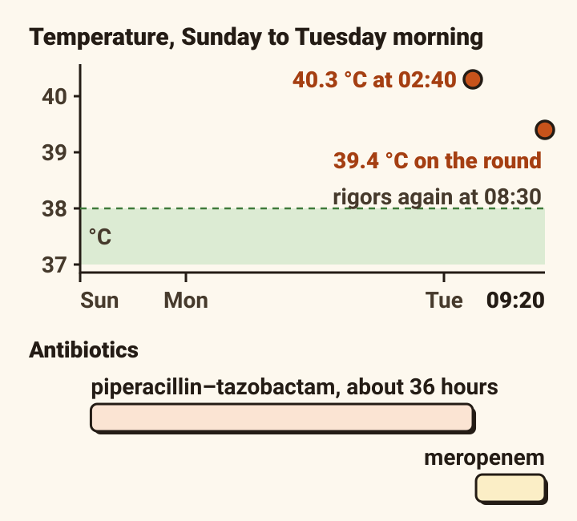
Her rigors came back at 08:30, on meropenem. Add vancomycin and an antifungal, or step back?
- Step back. Fever and other signs that persist despite adequate antimicrobial treatment, or with no infectious focus, are red flags for HLH.
- The UK consensus calls it the three Fs: fever, falling blood counts and a raised ferritin, in anyone acutely unwell who is not responding to treatment as expected.
Simone’s three: 39.4 °C; platelets 142 falling to 61; ferritin 16,800.
- Antibiotics are reviewed as a recorded decision at 48 to 72 hours: cease, amend, refer, extend or switch.
Inside the storm
The body’s clean-up crew will not switch off, and starts eating the blood.
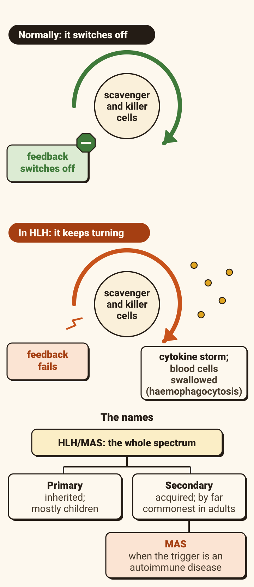
- Haemophagocytic lymphohistiocytosis (HLH) is a severe hyperinflammatory syndrome: the immune system’s scavenger cells (macrophages) and killer cells (cytotoxic T cells) are switched on abnormally.
Normally, feedback loops keep inflammation in check; in HLH those loops fail.
- The result is a flood of chemical messengers (a cytokine storm) that can be fatal.
- The macrophages swallow blood cells, mature or immature (haemophagocytosis), which is where the name comes from.
- The inherited form (primary HLH) is mostly a disease of children; the acquired form (secondary HLH) is by far the commonest in adults.
- When secondary HLH arises from an autoimmune disease such as lupus or Still’s disease, it is called macrophage activation syndrome (MAS).
- The EULAR/ACR task force calls the whole spectrum HLH/MAS.
What sets it off
In adults it is a trigger on a background: infection, cancer, or an autoimmune disease.
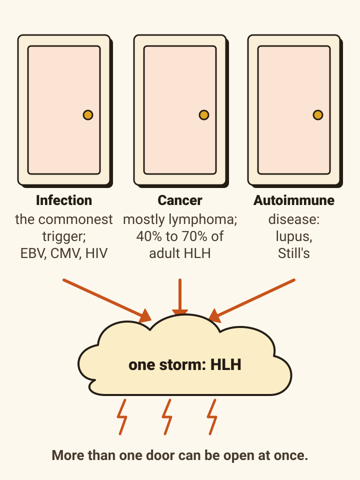
Tap each door.
- Infections are the commonest triggers of HLH.
- The viruses to look for every time are EBV, CMV and HIV.
In adults, cancers, mostly lymphomas, are the other major cause: about 40% to 70% of adult HLH is linked to a malignancy.
- Autoimmune diseases, lupus and Still’s among them, are the third door.
- HLH in rheumatic diseases has a more favourable outlook than the other forms.
More than oneEven MAS is commonly triggered by an infection, so more than one door can be open at once.
06:00 · the morning bloods
Every abnormal result is a footprint of the same storm.
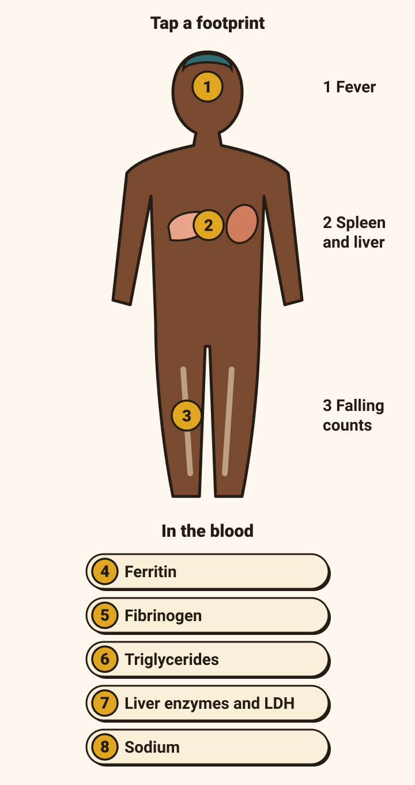
Tap a footprint on the picture, or below.
Fever: 39.4 °C on the round, 40.3 °C overnight. Fever is one of the eight HLH-2004 criteria.
A big spleen (14.2 cm) and liver (17.0 cm) on ultrasound. An enlarged spleen is an HLH-2004 criterion, and liver and spleen both enlarged score in the HScore.
Falling counts: white cells 2.1, lymphocytes 0.4, platelets 61. Low counts in HLH are mainly driven by the cytokine-led inflammation.
Ferritin 16,800: it rises as macrophages and liver cells are activated.
Fibrinogen 1.4: used up (consumed) and broken down.
Triglycerides 4.2: cytokines block the enzyme that clears fat from the blood (lipoprotein lipase).
Liver enzymes up (AST 380, ALT 190) and LDH 1,650. Raised liver enzymes are present in the vast majority of patients with HLH, and LDH is raised.
Sodium 129: a low sodium is among the findings consistent with HLH.
Sunday to Tuesday
The ESR falls because the fibrinogen it depends on is being used up.
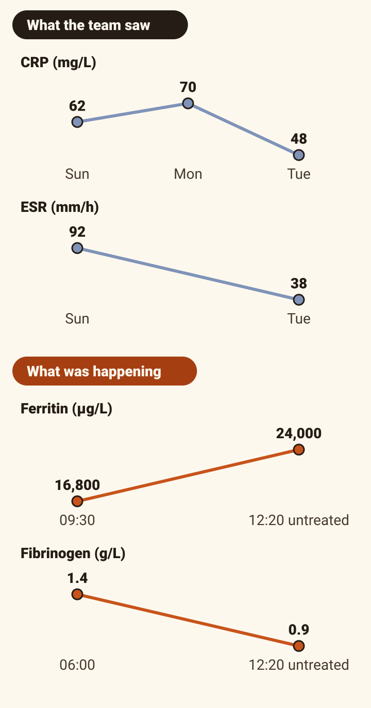
- Her ESR (erythrocyte sedimentation rate) was 92 on Sunday and 38 on Tuesday, while she got worse.
- In HLH/MAS the ESR falls as fibrinogen is consumed.
- Her fibrinogen was 1.4 g/L and falling; her ferritin was rising.
- In children’s series, the ESR and fibrinogen are lower in MAS than in active systemic juvenile arthritis, and the ratio of ferritin to ESR helps predict MAS.
- So a falling ESR in a patient who is getting worse is not reassurance.
No adult or lupus study of the falling ESR was found for this page.
Sepsis, or something inside it
It looks exactly like sepsis, and sepsis can be inside it.
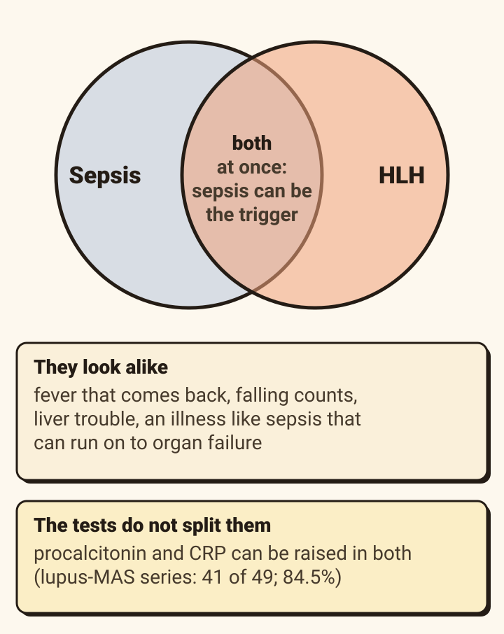
- Adults with HLH often have recurrent fever, low counts, liver dysfunction and a sepsis-like illness that can progress rapidly to multi-organ failure.
- HLH and sepsis can coexist, with sepsis as the possible trigger.
- Think of HLH in a deteriorating patient whose inflammation is out of proportion, with unexplained low counts or organ failure not answering antimicrobials.
- Procalcitonin and CRP do not separate them: in a series of 103 lupus-MAS episodes, procalcitonin was raised in 41 of 49 measured, and CRP in 84.5%.
In SimoneNo focus on her history or examination, no growth on Sunday’s cultures at 43 hours, a low white count fourteen months earlier, a ferritin climbing by the hour, and low C3 and C4.
09:30 · 10:50 · 12:20
A ferritin that keeps rising is the signal; the number alone is not.
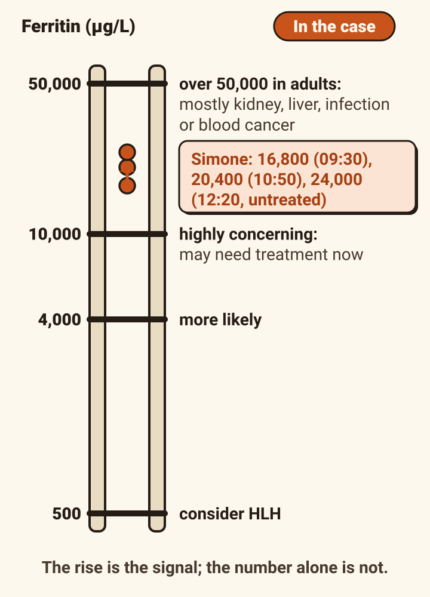
- A ferritin over 10,000 µg/L is more than 90% sensitive and specific for HLH in children.
- In adults it should still raise strong suspicion, but it is less specific; adult values are often 7,000 to 10,000.
- In adults with a ferritin over 50,000, most had kidney failure, liver injury, infection or a blood cancer rather than HLH.
- UK intensive care authors suggest: consider HLH above 500; more likely above 4,000; above 10,000 is highly concerning and may mean treatment is needed now.
- A ferritin that fails to improve predicts a worse outcome.
Scoring the morning
Three tests confirm it: ferritin, fibrinogen, triglycerides. Then score it.
- Ferritin, fibrinogen and triglycerides appear in both the HLH-2004 criteria and the HScore.
- Raised LDH and D-dimer and abnormal liver tests support the diagnosis and may help tell HLH from septic shock.
- The HScore turns nine findings into a probability.
Simone: 0
Tap each item to add it.
- Hers, item by item: temperature 33, liver and spleen 38, two cell lines low 24, ferritin over 6,000 50, triglycerides over 4 64, fibrinogen 2.5 or less 30, AST 30 or more 19. Total 258.
- Scored with her overnight 40.3 °C instead, it is 274.
- At 250 or more, the probability is over 99%.
- NHS England accepts an HScore over 169 as one route to its diagnostic criteria.
- Triglycerides over 4 mmol/L carry the most points of any single item: 64.
Five of eight?
She meets only 4 of the 8 children’s criteria, and should still be treated.
- HLH-2004 asks for 5 of 8 criteria.
- Simone meets 4: fever, a big spleen, high triglycerides with a low fibrinogen, and a ferritin over 500.
- She misses low counts in two of three lines (her haemoglobin of 96 and neutrophils of 1.4 are above the cut-offs of 90 and 1.0); the marrow, NK-cell activity and soluble CD25 were not back.
- The criteria were developed for children and are not formally validated in adults.
- HLH-directed treatment may be started even though five criteria are not met.
- Pending results must not delay the clinical decision to treat.
- The marrow is one criterion of eight; a marrow needs no platelet cover.
- Soluble CD25 (soluble IL-2 receptor) is sent, not waited for.
Two boxes
The storm is the complication. Something always lies underneath it: name it.
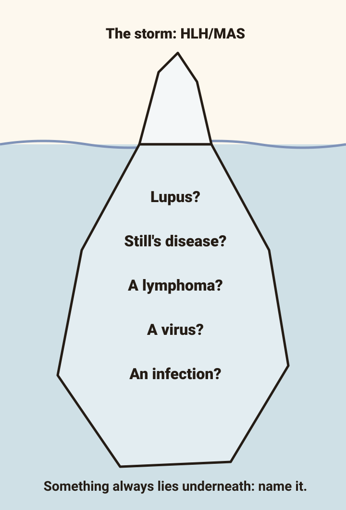
- That is why the case asked for two answers: the storm, and what lies underneath it.
- The underlying trigger needs a meticulous search, continued even while the HLH is being treated.
- Underneath Simone’s storm, lupus, Still’s disease, a lymphoma, a virus or an infection were all possible on Tuesday morning.
The GP record
The GP record held it fourteen months early.
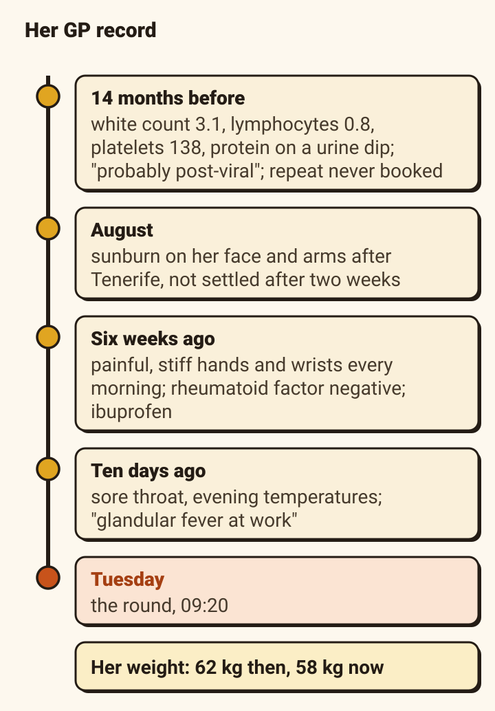
- Neither she nor her mother knew any of these results: the record was the only place they existed.
What lay underneath
Lupus in plain words: the immune system attacks the body’s own tissues.
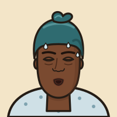
- Lupus (systemic lupus erythematosus, SLE) is an autoimmune disease: the body’s immune system attacks healthy parts of the body.
- Its features vary a great deal from one person to another.
- The screening test is the antinuclear antibody (ANA): antibodies against the nucleus of the body’s own cells. A positive ANA is the entry point to the classification criteria.
- It can affect the skin and mouth, the joints, the blood counts, the kidneys, and the linings of the lungs and heart.
- More women than men get lupus, and it is more common in women of African, Caribbean, Asian or Chinese background.
Adding it up
Her findings add up: 27 points where 10 classify.
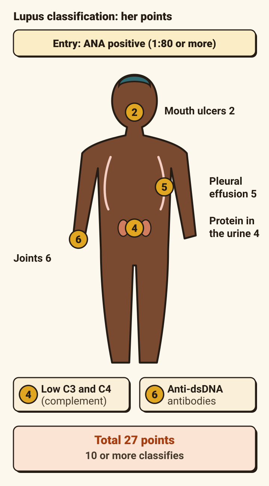
- The 2019 EULAR/ACR classification starts with a positive ANA (1:80 or more), then adds weighted items; 10 points or more classifies.
- Only the highest item in each group counts, and only if nothing explains it better.
- So her fever and low counts are not counted here: the storm explains them.
Tap each group.
- Her ulcers were on the hard palate, and she had not noticed them.
- The classic lupus mouth ulcer is usually painless and sits on the hard palate; the older ACR criteria required it to be seen by a doctor.
- In a series of adults with lupus MAS, mouth ulcers were associated with MAS.
A moderate fluid collection at the left lung base, on examination and on her chest film.
Joints count if two or more are swollen, or two or more are tender with at least 30 minutes of morning stiffness.
The kidney item needs protein over 0.5 g a day; her urine protein:creatinine ratio of 85 mg/mmol is about 0.85 g a day, so it scores 4.
C3 0.38 and C4 0.04 g/L.
Anti-dsDNA 412 IU/mL.
- Mouth ulcers 2; pleural effusion 5; joints 6; protein in the urine 4; low C3 and low C4 4; anti-dsDNA 6. That is 27.
- Classification criteria are not designed for diagnosis or treatment decisions; here they show that the picture holds together.
The best decoy
Fever, sore throat, sore wrists, ferritin 16,800: is it Still’s?
A 27-year-old with fever, a sore throat, painful wrists and a ferritin of 16,800: is this adult-onset Still’s disease?
- The Yamaguchi criteria count a high white count (10 or more, with 80% or more neutrophils) as a major criterion.
- Simone’s white count was 2.1, her lymphocytes 0.4, and her count was already low fourteen months before.
- A negative ANA and rheumatoid factor is only a minor criterion, and another rheumatic disease is an exclusion.
- Her low complement, protein in the urine and mouth ulcers are all lupus classification items.
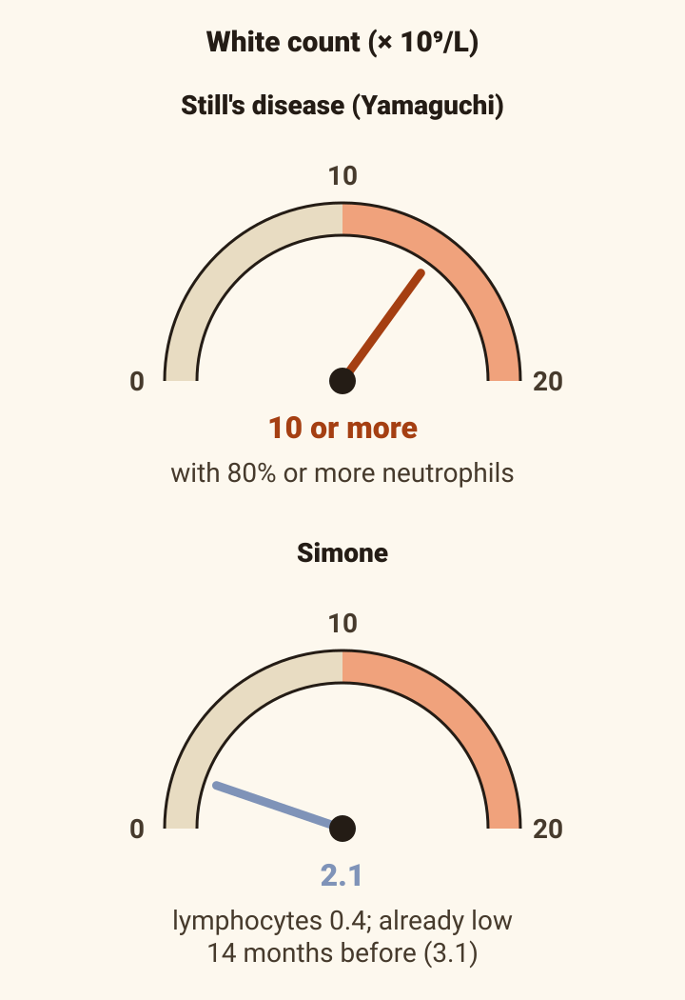
Lymphoma, viruses
Lymphoma and viruses must be looked for, not assumed away.
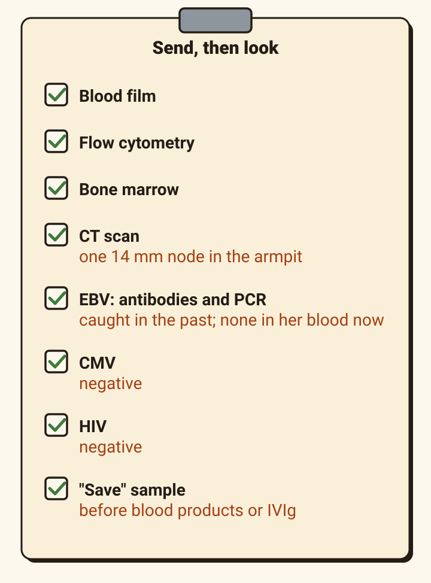
- About 40% to 70% of adult HLH is linked to cancer, so every patient needs a thorough cancer work-up.
- Lymphoma can hide: scan-guided imaging (PET-CT), repeated tissue sampling and a lymphoma reference pathologist are recommended.
- The first look is a blood film, flow cytometry and the marrow, with a CT.
- EBV, CMV and HIV are tested in every work-up, EBV and CMV by blood test for antibodies (serology) and for the virus itself (PCR).
- Take the serology, and a “save” sample, before any blood products or IVIg (intravenous immunoglobulin), which confound it.
In SimoneSmall, soft, tender nodes; one 14 mm node in the armpit on CT; EBV caught in the past, with no EBV in her blood now; CMV and HIV negative.
The morning round
Suspect, send, treat, tell: all on the same morning.
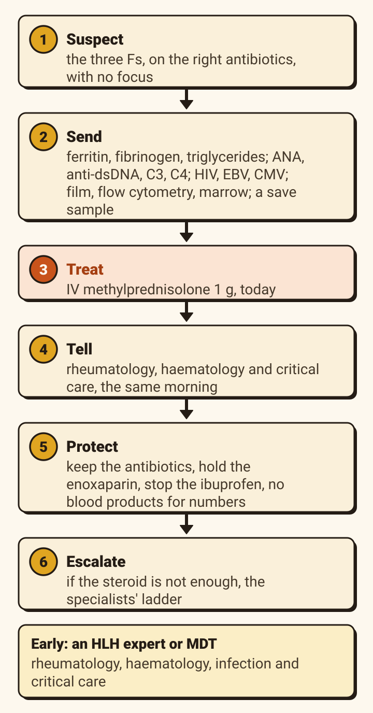
The marrow list is at four
Haematology can do the marrow at four. Do you wait for it before the steroid?
Haematology can do the marrow at four o’clock. Do you wait for it before giving the steroid?
- Steroid can blur the diagnosis of a lymphoma, so tissue is taken first when that can be done quickly.
- Tissue before treatment may be considered in stable patients; treatment should not be delayed in someone who is unwell or getting worse.
- So: the film and flow cytometry now, the steroid now, the marrow this afternoon.
- Simone was NEWS2 7 at 09:20; untreated, she was 10 by 10:50.
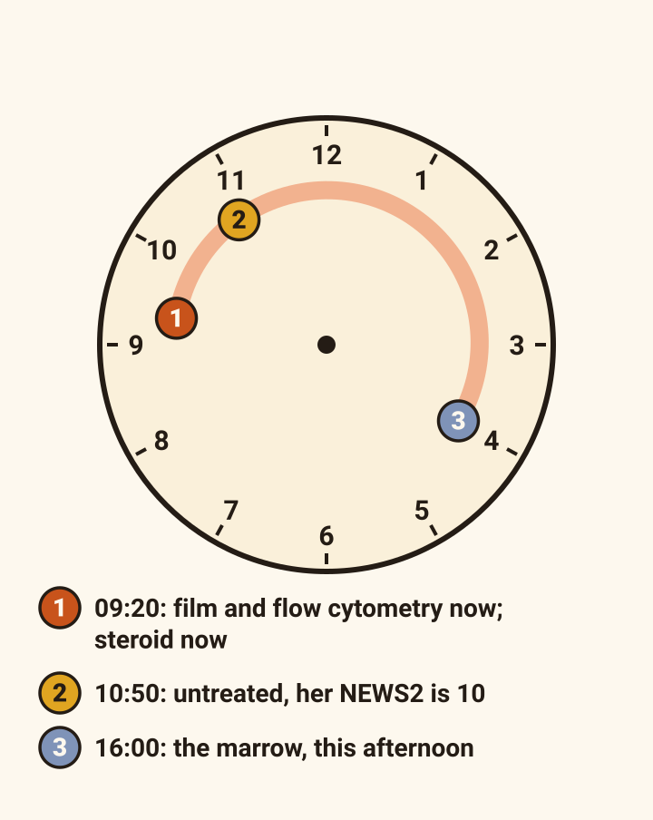
On the chart today
Steroid first, at pulse dose, today.
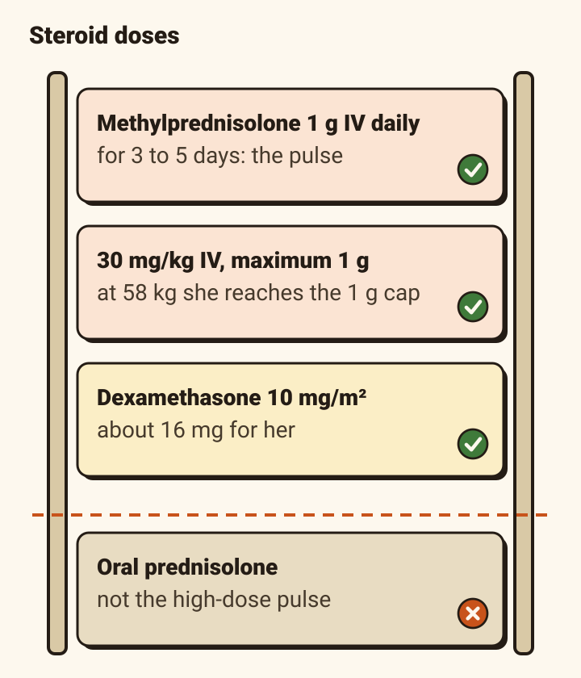
- Steroids are conventionally first-line in MAS: high-dose IV methylprednisolone, 1 g a day for 3 to 5 days, is a frequent first approach.
- In NHS England’s pathway, steroid is first line.
- In 57 lupus-MAS episodes, high-dose steroid alone brought 37 (65%) into remission.
- NHS England measures response as a ferritin fall of at least 10% within 7 days.
- High-dose steroid can bring high blood sugar, high blood pressure, muscle weakness (myopathy) and psychosis.
The next rungs
If the steroid is not enough, the next rungs belong to the specialists.
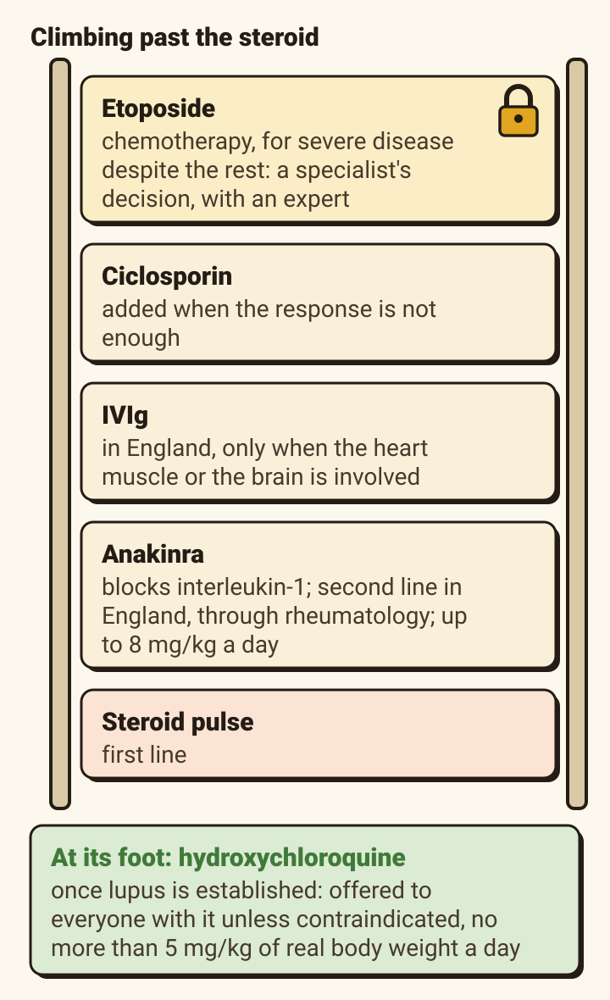
- The EULAR/ACR points to consider allow steroid, anakinra and IVIg as early treatment, started together if needed.
The meropenem
Keep the antibiotics. She may have both, and you are about to suppress her immunity.
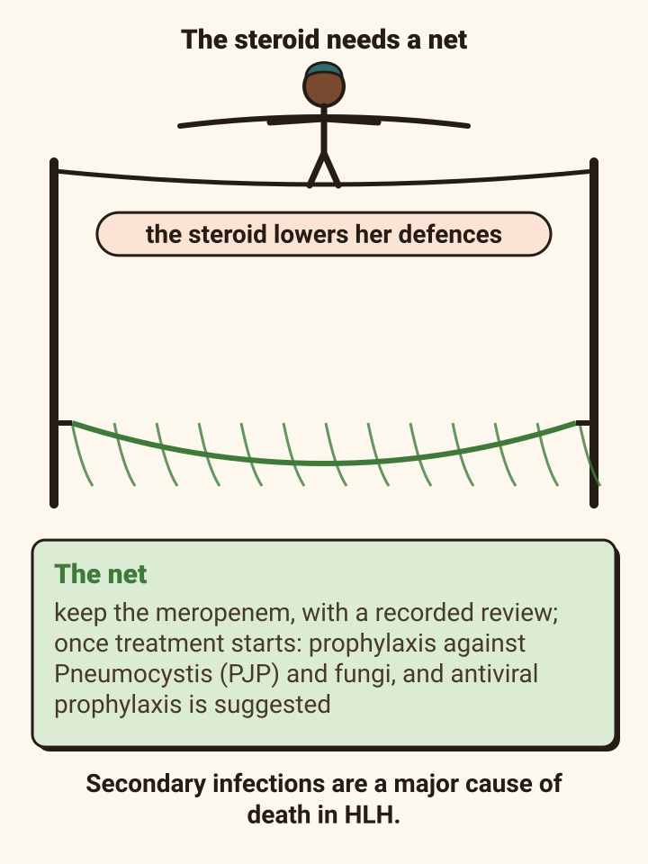
- Infection and HLH can coexist, and infection can be the trigger.
- Treating what drives it will often include empiric antimicrobials.
The drug chart
Read the drug chart again: the enoxaparin and the ibuprofen.
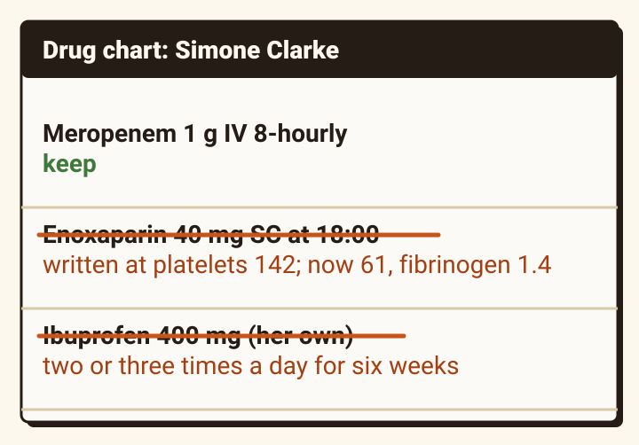
- Enoxaparin 40 mg was written on Sunday when her platelets were 142; on Tuesday they were 61 and her fibrinogen 1.4.
- She had been taking ibuprofen 400 mg two or three times a day for six weeks.
Tap a line to strike it.
- The Department of Health risk-assessment tool lists platelets under 75 and an acquired bleeding disorder as bleeding risks.
- NICE asks for the balance of clot and bleeding risk to be reassessed when a patient’s condition changes.
- Hold the prophylaxis, and do not start treatment-dose anticoagulation at these counts.
The BNF cautions ibuprofen in clotting defects and connective-tissue disorders, and lists low platelets among its side effects.
06:00 · platelets 61, fibrinogen 1.4
Numbers are not bleeding: no products to correct a count.
Platelets 61, fibrinogen 1.4, PT 15.8 seconds, and she is not bleeding. What does she need first?
No blood products.
- Platelets are given to prevent bleeding only below 10, in someone who is not bleeding.
- With significant bleeding, platelets are offered below 30.
- Cryoprecipitate is for bleeding with a fibrinogen below 1.5, not for a low fibrinogen on its own.
- Fresh frozen plasma (FFP) is not given to correct clotting tests in someone who is not bleeding.
- A bone marrow needs no platelet cover; a lumbar puncture needs a count of 40.
10:50 · 12:20 · 13:50
A NEWS2 of 7 is a call to critical care, whatever the diagnosis.
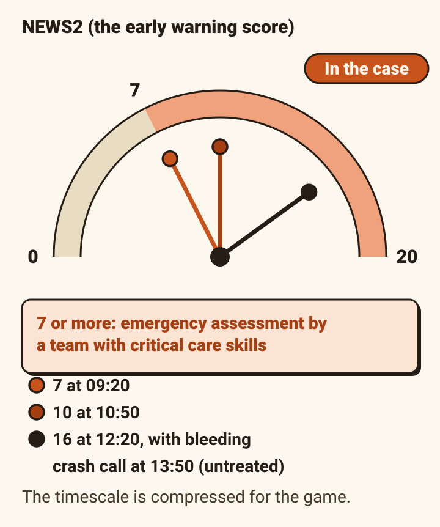
- A NEWS2 of 7 or more calls for emergency assessment by a team with critical care skills, continuous monitoring, and usually a move to a higher-dependency area.
- The trigger is the score, not the diagnosis.
- Nearly half of adults with MAS need intensive care.
- In 103 lupus-MAS episodes, 33 needed intensive care.
- Mortality in adult HLH ranges from 20% to 88%.
That timescale is compressed for the game; no source gives an hour-by-hour course, though mild signs can progress with unexpected speed and severity.
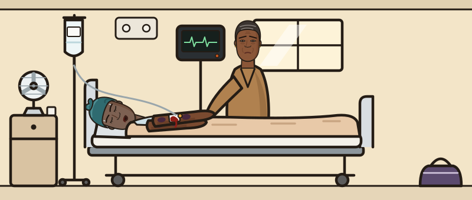
Tuesday, mid-morning
Three explanations each fitted part of her. One fitted all of her.
| Finding | Sepsis | Still’s | Lymphoma | Lupus with MAS |
|---|---|---|---|---|
| Fever | ✓ | ✓ | – | ✓ |
| Rigors, falling blood pressure | ✓ | – | – | ✓ |
| Sore throat | – | ✓ | – | ✓ |
| Joints | ✗ | ✓ | ✗ | ✓ |
| Mouth ulcers | ✗ | – | ✗ | ✓ |
| Low white count, low a year before | ✗ | ✗ | – | ✓ |
| Low complement | ✗ | ✗ | ✗ | ✓ |
| Protein in the urine | – | ✗ | ✗ | ✓ |
| Sweats, weight loss | – | – | ✓ | ✓ |
| Nodes | – | ✓ | ✓ | ✓ |
| Spleen | – | – | ✓ | ✓ |
| Ferritin | – | ✓ | – | ✓ |
✓ explains it · ✗ does not · – not weighed here. Tap a finding to go to its card.
- Sepsis explained the fever, the rigors and the falling blood pressure, but not a low count a year before, the joints, the ulcers or the low complement.
- Still’s explained the fever, the throat, the joints, the nodes and the ferritin, but not a low white count with lymphopenia, low complement or protein in the urine.
- Lymphoma explained the sweats, the weight loss, the nodes and the spleen, but not the joints, the ulcers, the protein in the urine or the low complement.
- Lupus with MAS explained all of it.
The answer was on the screen by mid-morning: the 06:00 bloods, the GP record and her palate.
Ferritin, fibrinogen and triglycerides named the storm; the record, the mouth and the complement named the disease underneath.
A gram of methylprednisolone before the second nurse’s call, and she settled on the ward.
Take home
Take home.
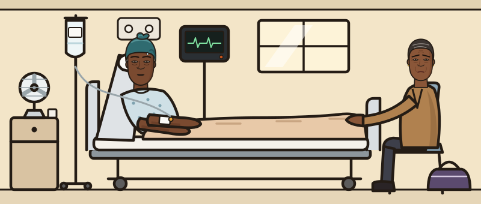
- Fever, falling counts and a rising ferritin on the right antibiotics: look beyond infection.
- Send ferritin, fibrinogen and triglycerides, then score it; a falling ESR is not recovery.
- Give pulse steroid today; send the marrow and the antibodies, and never wait for them.
- Name what lies underneath: the GP record, the mouth, the complement.
- Keep the antibiotics, hold the enoxaparin, give no products for numbers, and call critical care.
Where this comes from.
HLH and macrophage activation syndrome
- La Rosée P, Horne A, Hines M, et al. Recommendations for the management of hemophagocytic lymphohistiocytosis in adults. Blood 2019;133(23):2465–2477. doi:10.1182/blood.2018894618
- Shakoory B, Geerlinks A, Wilejto M, et al. The 2022 EULAR/ACR points to consider at the early stages of diagnosis and management of suspected haemophagocytic lymphohistiocytosis/macrophage activation syndrome (HLH/MAS). Annals of the Rheumatic Diseases 2023;82:1271–1285. doi:10.1136/ard-2023-224123
- Cox MF, Mackenzie S, Low R, et al. Diagnosis and investigation of suspected haemophagocytic lymphohistiocytosis in adults: 2023 Hyperinflammation and HLH Across Speciality Collaboration (HiHASC) consensus guideline. Lancet Rheumatology 2024;6:e51–e62. doi:10.1016/S2665-9913(23)00273-4
- Bauchmuller K, Manson JJ, Tattersall R, et al. Haemophagocytic lymphohistiocytosis in adult critical care. Journal of the Intensive Care Society 2020;21:256–268. doi:10.1177/1751143719893865
- NHS England. Clinical commissioning policy: anakinra for haemophagocytic lymphohistiocytosis for adults and children in all ages [210701P]. 2021. england.nhs.uk
- Fardet L, Galicier L, Lambotte O, et al. Development and validation of the HScore, a score for the diagnosis of reactive hemophagocytic syndrome. Arthritis & Rheumatology 2014;66:2613–2620. doi:10.1002/art.38690
- Henter JI, Horne A, Aricó M, et al. HLH-2004: diagnostic and therapeutic guidelines for hemophagocytic lymphohistiocytosis. Pediatric Blood & Cancer 2007;48:124–131. doi:10.1002/pbc.21039
- Schram AM, Campigotto F, Mullally A, et al. Marked hyperferritinemia does not predict for HLH in the adult population. Blood 2015;125:1548–1552. doi:10.1182/blood-2014-10-602607
- Children’s series on the ESR: Pediatric Rheumatology Online Journal 2024, doi:10.1186/s12969-024-00991-3; World Journal of Pediatrics 2020, doi:10.1007/s12519-019-00256-0
Lupus and the decoy
- Aringer M, Costenbader K, Daikh D, et al. 2019 European League Against Rheumatism/American College of Rheumatology classification criteria for systemic lupus erythematosus. Arthritis & Rheumatology 2019;71:1400–1412. doi:10.1002/art.40930
- Fanouriakis A, Kostopoulou M, Andersen J, et al. EULAR recommendations for the management of systemic lupus erythematosus: 2023 update. Annals of the Rheumatic Diseases 2024;83:15–29. doi:10.1136/ard-2023-224762
- NHS. Lupus (page last reviewed 19 July 2023). nhs.uk/conditions/lupus
- Rodsaward P, Prueksrisakul T, Deekajorndech T, et al. Oral ulcers in juvenile-onset systemic lupus erythematosus: a review of the literature. American Journal of Clinical Dermatology 2017;18(6):755–762. doi:10.1007/s40257-017-0286-9
- Gavand PE, Serio I, Arnaud L, et al. Clinical spectrum and therapeutic management of systemic lupus erythematosus-associated macrophage activation syndrome: a study of 103 episodes in 89 adult patients. Autoimmunity Reviews 2017;16:743–749. doi:10.1016/j.autrev.2017.05.010
- Wafa A, Hicham H, Naoufal R, et al. Clinical spectrum and therapeutic management of systemic lupus erythematosus-associated macrophage activation syndrome: 20 Moroccan adult patients. Clinical Rheumatology 2022;41:2021–2033. doi:10.1007/s10067-022-06055-9
- Yamaguchi M, Ohta A, Tsunematsu T, et al. Preliminary criteria for classification of adult Still’s disease. Journal of Rheumatology 1992;19:424–430.
The safety net
- NICE. Blood transfusion (NG24), recommendations 1.7, 1.9 and 1.11. nice.org.uk/guidance/ng24
- British Society for Haematology. Summary of guidelines for the use of platelet transfusions (2016, reviewed 2021). b-s-h.org.uk
- NICE. Venous thromboembolism in over 16s (NG89). nice.org.uk/guidance/ng89. Department of Health VTE risk assessment template (2010), as adapted by the Northern Ireland VTE Advisory Group (2011).
- BNF. Ibuprofen. bnf.nice.org.uk
- UKHSA. Start smart then focus: antimicrobial stewardship toolkit for inpatient care settings (updated 2023). gov.uk
- Royal College of Physicians. National Early Warning Score (NEWS) 2 (2017). rcp.ac.uk
Guidelines change. Checked November 2026.